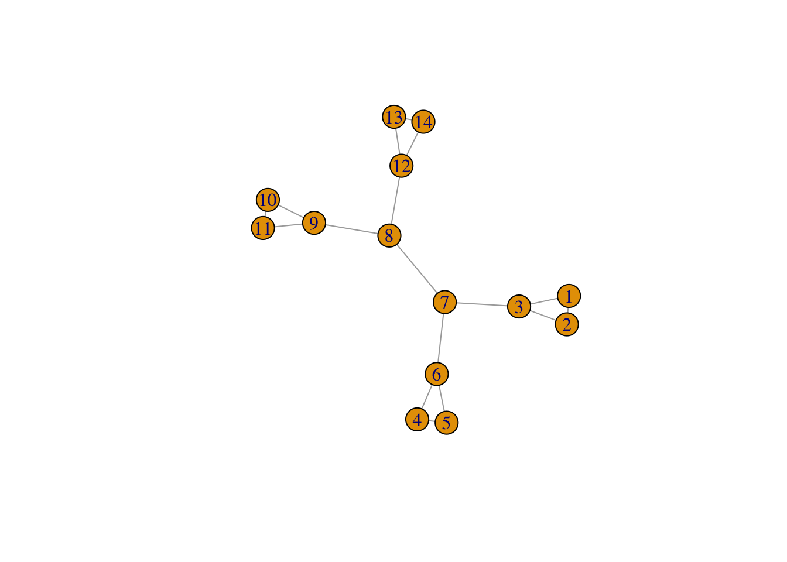

Chapitre 3 Détection de communautés : approche modularité
Une problématique souvent liée aux graphes est la détection de communautés. Elle consiste à trouver des groupes de nœuds très liés entre eux. Cette thématique est proche du clustering. Nous présentons dans cette partie les approches liées à la modularité. Cette dernière est un critère qui permet de mesurer la performance d’une partition de nœuds dans un graphe, plus la modularité est grande, meilleure est la partition.
On considère le graphe suivant
G <- make_graph(c(1,2,1,3,1,4,4,5,4,6),directed = FALSE)
plot(G)
et les deux partitions des nœuds suivantes.
cl1 <- c(1,1,1,2,2,2)
cl2 <- c(1,2,1,2,1,1)Calculer la modularité pour ces deux partitions en utilisant la définition (la formule).
Retrouver ces deux valeurs avec la fonction modularity.
Construire un graphe et proposer une partition avec une modularité élevée et une autre avec une modularité faible.
On considère le graphe suivant :
G1 <- make_full_graph(3)
G2 <- make_full_graph(3)
G3 <- make_full_graph(2)
G4 <- make_full_graph(3)
G5 <- make_full_graph(3)
G <- G1+G2+G3+G4+G5
G <- add.edges(G, c(6,7))
G <- add.edges(G, c(3,7))
G <- add.edges(G, c(8,9))
G <- add.edges(G, c(8,12))
plot(G)
Calculer l’edge betweeness de chaque arête et identifier l’arête qui possède la plus forte valeur.
Effectuer le clustering par edge betweeness et visualiser le dendrogramme. Identifier la première arête retirée.
Représenter les classes sur le graphe.
Couper le dendrogramme pour obtenir 3 classes. On pourra utiliser cutat.
Comparer le résultat avec la méthode de Louvain.
Comparer les modularités obtenues.
Comparer avec cluster_optimal.
Utiliser les techniques basées sur la modularité pour faire de classes sur les données karate et friends.
library(igraphdata)
data(karate)